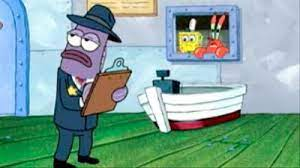
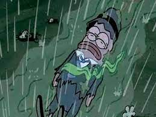

As a fan favorite, this krabby patty earns a place on this list not because of it's desirable flavor/quality, but because of it's impressively disgusting design. This, certainly, is the single most repulsive, sickening food item to appear on the show.
Here is picture of the health inspector before consumption of the nasty patty:
Here is that same health inspector post-consumption of the nasty patty:

In conclusion, you DO NOT want to eat a nasty patty
Here are the required ingredients to be this vomit-inducing concoction, as presented in Season 3 Episode 4a: